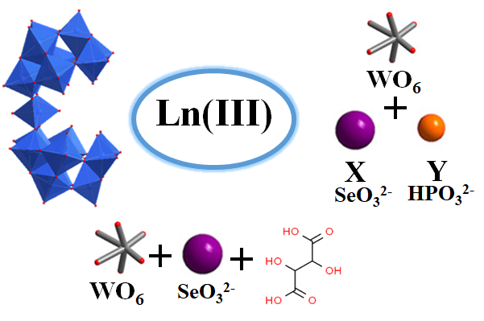
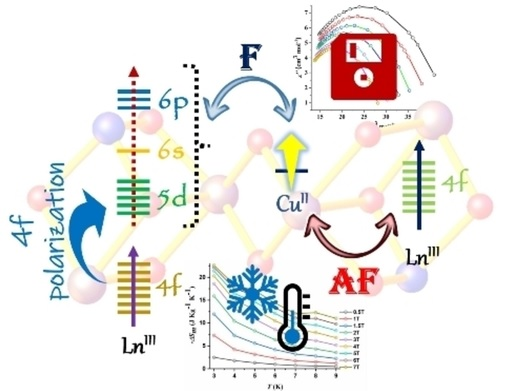
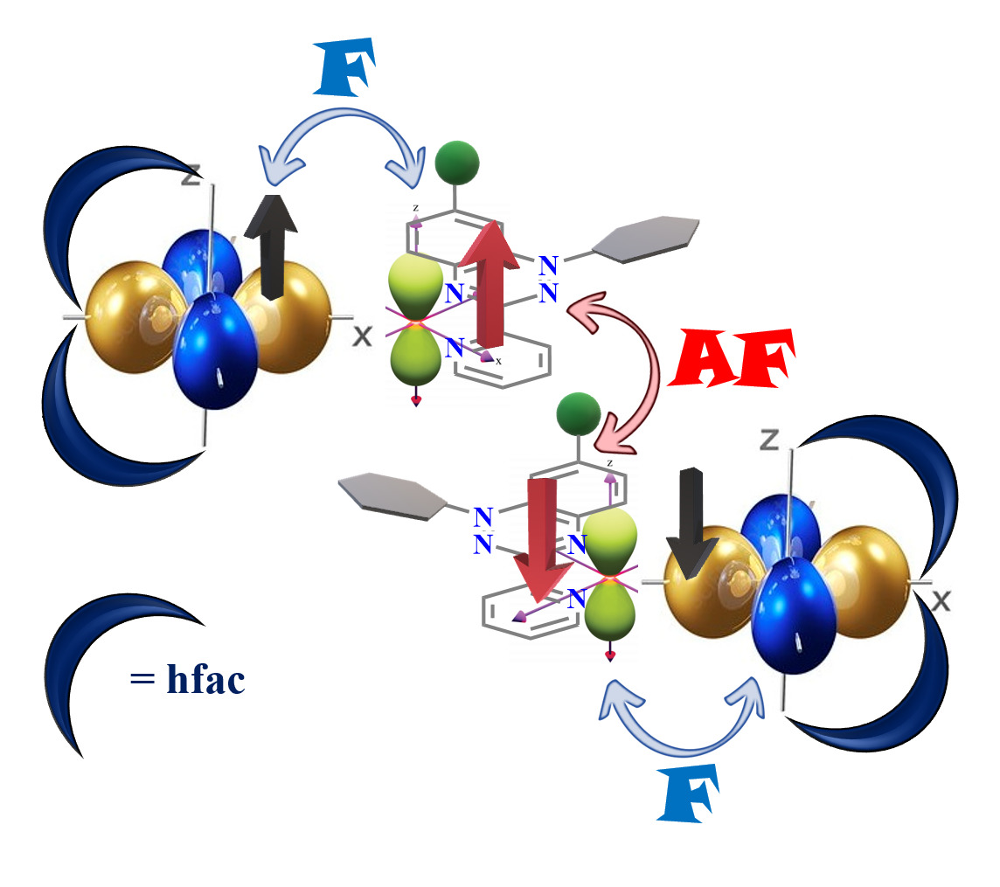
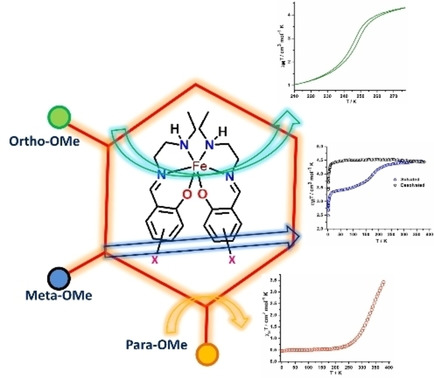
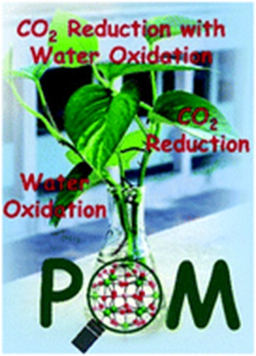

Research
My research mainly focuses on metal coordination chemistry, with special emphasis on the thrust areas, namely, molecular magnets (SMMs), SCO, Ln-based Photoluminescence, Radicals and Photo-electrocatalytic application.
 Polyoxometalates (POMs), are anionic metal-oxo clusters of early transition metals that possess high negative charge and show strong affinity towards transition as well as lanthanide metal cations. Thus POMs can be useful as multidentate inorganic ligands in designing various multimetallic clusters. Among the enormous family of POMs, lanthanide containing complexes are of great interest in the area of molecular magnetism particularly for exhibiting slow relaxation of magnetization, known as single molecule magnets (SMMs). With this motivation, polyoxometalates have been utilized as building blocks to achieve the desired geometry around Ln(III) centers, which is essential for demonstrating slow relaxation of magnetization behavior. Three different strategies have been employed to achieve this, including (i) a dilacunary arsenotungstate [As2W19O67(H2O)]14- is used as a precursor in acidic pH medium around the both oblate (Dy) and prolate (Yb) metal centers, (ii) a same dilacunary arsenotungstate [As2W19O67(H2O)]14- have been used at a higher pH medium where [As2W19O67(H2O)]14- isomerized to [α-AsW9O33]9- building unit with electronically same Ln (III) ion (Tb and Dy) where Tb(III) metal center is a Non-Kramer ion and Dy (III) metal centers is a Kramer ion (iii) Mixed heteroatom (PIII, SeIV) is used as a template unit to build two different building blocks Keggin [α-SeIVW9O33]8- and Dawson [HPIIISeIIIW15O54]12- around the Dy(III) center and (iv) Tartaric acid used as a flexible multidentate bridging ligand to build organic-inorganic hybrid Dy (III)-substituted polyoxometalates. Read More
 Pure lanthanide-based SMMs have been difficult to materialize owing to QTM, which provides a shortcut relaxation pathway, thereby leading to a lower energy barrier for relaxation (Ueff). To reduce QTM, the combination of 3d and 4 f ions to form coordination complexes which led to the rise of many new single molecule magnets (SMMs) having substantial blocking temperature (TB) and energy barrier for relaxation (Ueff). Trivalent 4 f metal ions possess strong anisotropy and hence, large anisotropic barriers within it (suitable for SMMs), whereas 3d transition metal ions actively participate in exchange interactions with the 4 f ions, thereby modulating the relaxation dynamics by coupling and projection of their spins with lanthanide ions. In this work, we have synthesized three phenoxide bridged heterometallic hexanuclear 3d–4f complexes bearing the formula [Cu2(L)2Ln4(L)4(o-van)2] [L=2-((E)-((2-hydroxyphenyl) imino] methyl) phenol; o-van=ortho-vanillin] (LnIII=GdIII (1), DyIII (2), and TbIII (3)). The magneto-caloric effect has been observed for 1 with an entropy change (−ΔSm) of 22.3 J kg-1 K-1 at 3 K and 7 T. The Zero-field single molecule magnet (SMM) behaviour has been observed for 2, where Raman relaxation and quantum tunneling of magnetization (QTM) played a role in magnetization relaxation. Further, BS-DFT calculation for the complexes provides an estimate of the exchange interactions between the paramagnetic centres.
 Molecule-based magnetic materials have traditionally relied on magnetic exchange coupling between paramagnetic metal centers, often mediated by diamagnetic ligands. However, exchange coupling over extended distances using diamagnetic ligands tends to be weak, despite the effectiveness of one or two atom bridges like O2- and CN-. A promising alternative is the utilization of bridging paramagnetic ligands, where strong metal-ligand exchange can generate high spin molecules regardless of the coupling being ferromagnetic or antiferromagnetic. To introduced the exchange coupling in metal complexes, I have synthesized one of the stable class of radical which is 1,2,4-benzotriazin-4-yl radical known as Blatter radical. A halogen group was introduced at the C4 position of 1-phenyl-3-(pyrid-2-yl) benzo[e]-[1,2,4] radical to investigate the impact of halogen substitution on the solid-state structure and magnetic properties. Further, two metal complexes [M(hfac)2(Rad3c)⋅CHCl3](M=Cu(II) (1), Zn(II) (2) were synthesized. The magnetic studies revealed antiferromagnetic coupling between the radical centers, with the coupling strength decreasing in the order of Rad3a-Rad3b-Rad3c. In addition, complex 1 shows ferromagnetic exchange interaction between the metal and radical centres due to the orthogonal nature of the dx2-y2 orbital of Cu(II) and the p-orbital of the radical containing nitrogen. On the other hand, complex 2 displayed weak antiferromagnetic exchange interaction between the radical centers, mediated through space via a small overlap between two magnetic orbitals centered on the radicals.
 In my research, I have explored Fe(III) spin crossover systems using heterocyclic Schiff base ligands. Three complexes were synthesized with the formula [Fe(X-OMeSalEen)2]NCY, where X represents the position of the methoxy group (ortho, meta, and para) on the phenoxide ring bonded directly to the Fe(III) center, and Y represents the chalcogen atom (S or Se). Complex 1 exhibited a sharp and hysteretic spin crossover behavior, displaying a 4 K-wide hysteresis loop. Complex 2 showed spin crossover of Fe(III) from low-spin to high-spin states when solvated, and remained stable in the high-spin state after desolvation. Complex 3 exhibited an abrupt and incomplete spin crossover above room temperature. Magneto-structural correlation and UV-Vis spectroscopy have been done to study spin-crossover behavior and the spin transition temperature of the complexes. Finally, by tuning the ligand's electronic and steric properties to access materials that show abrupt spin crossover close to room temperature.
Lanthanide ions are extensively studied for their efficient UV/Vis-to-NIR photoluminescence arising from f-f electronic transitions. However, a drawback is their low molar absorption coefficients (ε), resulting in minimal direct excitation in the 4f levels. This limitation can be overcome through the antenna effect or sensitization. Ln-POMs offer enhanced absorption and improved luminescence output. POMs act as light-harvesting components, functioning as an antenna to enhance the weak absorption of Ln(III) ions. These complexes exhibit thermal stability and exhibit better luminescence properties. In my ongoing research, I am exploring the photo luminescent behavior of Ln-POMs. Interestingly, I have observed that these complexes emit different colors under different excitation wavelengths, indicating their potential as color-tunable materials.
 Polyoxometalates (POMs) are an exceptional group of inorganic redox active materials that consist of multiple metal-oxide ions linked together by oxygen atoms to form nanoclusters within an ordered three-dimensional framework. Their rapid and highly reversible redox activity endows them with excellent photo or electrochemical properties. Currently I am working on POM catalysed photocatalytic CO2 reduction coupled with water oxidation, binding/ activation of CO2 by keggin POMs. Additionally, I am exploring the CoII-linked polyoxometalates polymer, which is further doped with Mo(VI) centers, and evaluating their magnetic and catalytic performance.